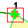
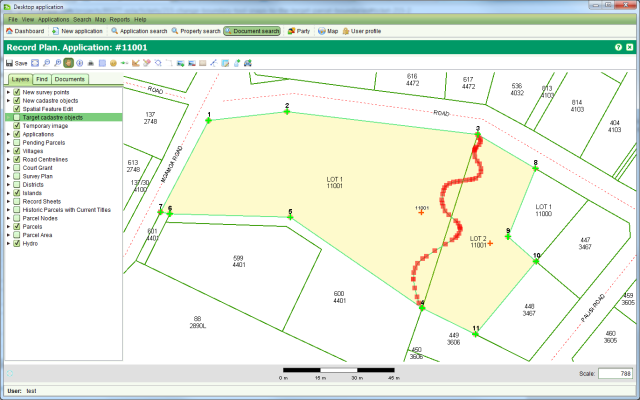

The Create New Parcel tool allows you to create new parcels with simple right-line boundaries where the start and end point for each boundary line must be a survey point. If the parcel requires an irregular boundary (a.k.a. natural boundary) then you need to use the Boundary Change tools to modify the right line boundary line of a new parcel.
IMPORTANT: Before using the Boundary Change tools, ensure you add all existing
parcels that will share the irregular boundary as target parcels. Only modifying a parcel on
one side of the boundary may result in gaps and overlaps forming in the cadastral network. To
do this may require to you add parcels that are not recorded on the plan. You also need to
re-create new parcels over all target parcels using the Create New Parcels tool prior to using the
Boundary Change tools. The exception to this rule is where the irregular boundary will form
the shoreline of a lake or the sea. In this case it is unlikely there will be an adjacent
parcel to update.
Create New Parcels tool prior to using the
Boundary Change tools. The exception to this rule is where the irregular boundary will form
the shoreline of a lake or the sea. In this case it is unlikely there will be an adjacent
parcel to update.
TheSelect Boundary tool can be used to identify the boundary line(s) of a new parcel that must be changed into an irregular boundary. Use the tool to select the start and end points of the irregular boundary by dragging a small selection box around the appropriate new parcel node when prompted to do so by the tool.

Selecting a Parcel Node
The order that you select the start and end points for the new irregular boundary is important. The tool will highlight all parcel boundary line(s) in a clockwise direction from the start point to the end point. The highlighted boundary lines indicate the boundary lines that will be replaced by the new irregular boundary. If the wrong sequence of boundary lines is highlighted, repeat the selection ensuring the end point is selected as the start point and vice versa.
Selecting a boundary to change will enable theChange Boundary tool. Use this tool to reshape the parcel boundary using the mouse.

Irregular Parcel Boundary
If the new boundary covers a large area, it can be difficult using theChange Boundary tool to create the new boundary in one go. In this situation, create an initial boundary that approximately represents the new boundary you require. You can then zoom in and use the Boundary Change tools to improve segments of the initial boundary as required.